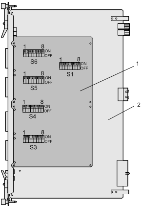

The physical boards of the GEIUA, GEIUB, GEIUP, and GEIUT are the same. After being loaded with different software, the physical boards perform different functions. They have the same types of DIP switches: S1, S3, S4, S5, and S6.
Figure 1 shows the layout of the DIP switches on the GEIUA/GEIUB/GEIUP/GEIUT.

(1) Sub-board |
(2) Bottom plate |
All the DIP switches are located on the front side of the sub-board. The front of the sub-board faces and fits into the bottom plate. Therefore, you should remove the sub-board before setting the DIP switches.
Table 1 describes the DIP switches on the GEIUA/GEIUB/GEIUP/GEIUT.
DIP Switch |
DIP Bit |
Description |
Setting for 75-ohm Coaxial Cable |
Value of DIP Bit for 75-ohm Coaxial Cable |
Setting for 120-ohm Twisted Pair Cable |
Value of DIP Bit for 120-ohm Twisted Pair Cable |
|---|---|---|---|---|---|---|
S1 |
8 |
Used to select the impedance on E1/T1 links 0-7 |
ON |
0 |
OFF |
1 |
7 |
Used to select the impedance on E1/T1 links 8-15 |
ON |
0 |
OFF |
1 |
|
6 |
Used to select the impedance on E1/T1 links 16-23 |
ON |
0 |
OFF |
1 |
|
5 |
Used to select the impedance on E1/T1 links 24-31 |
ON |
0 |
OFF |
1 |
|
1-4 |
Reserved |
|||||
S3 |
1-8 |
Used to set the protection grounding of the transmitting end of E1/T1 links 0-7 |
ON |
0 |
OFF |
1 |
S4 |
1-8 |
Used to set the protection grounding of the transmitting end of E1/T1 links 8-15 |
ON |
0 |
OFF |
1 |
S5 |
1-8 |
Used to set the protection grounding of the transmitting end of E1/T1 links 16-23 |
ON |
0 |
OFF |
1 |
S6 |
1-8 |
Used to set the protection grounding of the transmitting end of E1/T1 links 24-31 |
ON |
0 |
OFF |
1 |
Table 2 describes different switches listed in Table 1.
DIP Switch |
Description |
|---|---|
E1/T1 impedance selection switch |
Used to select the logical transmission mode of the board and to notify the software of the current transmission mode |
Switch used to set the protection grounding of the E1/T1 transmitting end |
Used to control the grounding of the transmitting end of
the E1/T1 signals:
|
- By default, the DIP switches are set in 75-ohm coaxial transmission mode.
- The setting for the DIP switches on the active EIUa board must be the same as that for the DIP switches on the standby EIUa board.
- The receiving ends should not be grounded in either balanced or unbalanced modes.
- Pay attention to the mapping between the two types of DIP switches.